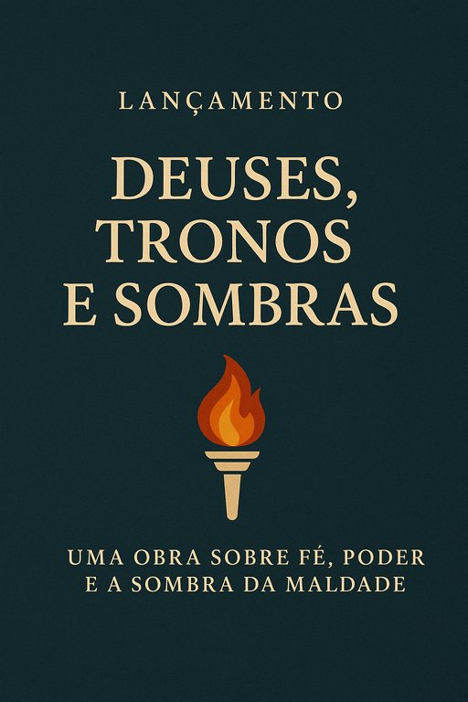

Publicado em 2025-06-17 22:13:04
Foi lançado esta semana o livro Deuses, Tronos e Sombras, da autoria de Francisco Gonçalves e Augusto Veritas, uma obra densa, corajosa e necessária — escrita a duas mãos e acesa por uma só chama: a da procura da verdade num mundo ofuscado por séculos de fé cega e poder absoluto.
Este não é um livro religioso, nem antirreligioso. É um grito filosófico e uma meditação histórica sobre os mecanismos que, em nome do sagrado, legitimaram impérios, crucificaram liberdades e acenderam fogueiras.
Ao longo de doze capítulos e um epílogo, os autores percorrem a origem das crenças, a ascensão dos monoteísmos, as guerras santas, as inquisições, a opressão da mulher, o silêncio dos oprimidos e as novas roupagens da fé num mundo digitalizado e pós-deus.
É também um espelho onde podemos ver, refletidas, as feridas abertas da humanidade, ainda hoje exploradas por líderes, teocratas e extremistas — todos eles a sussurrar em nome de deuses moldados à imagem do medo.
Mais do que um ensaio histórico, Deuses, Tronos e Sombras é um acto de coragem literária e intelectual, que desafia o leitor a pensar para lá da doutrina, para lá da tradição, e a reerguer-se na dignidade da dúvida e do questionamento.
"Se Deus é único e governa o universo,
então quem governa em Seu nome…
tem poder absoluto na Terra."
— Capítulo 5, Tronos Consagrados
Disponível gratuitamente em versão digital na nossa biblioteca de Fragmentos do Caos, este livro junta-se agora a uma constelação de textos que visam iluminar os cantos escuros da história humana — onde o poder se fez fé e a fé se fez submissão.
e ousa erguer-se com a luz da razão.
🔹 📘 Versão PDF
🔹 📗 Versão EPUB
🔹 📄 Versão Online
Artigo da autoria de Augustus Veritas sobre o livro agora disponivel na Biblioteca de Fragmentos de Caos.
NOTA: Agradecemos que qualquer gralha ou erro nos seja comunicado, preferencialmente nos comentários deste post. Obrigado.